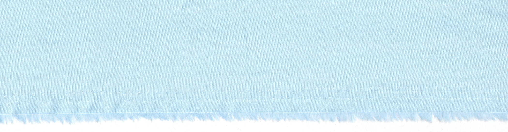
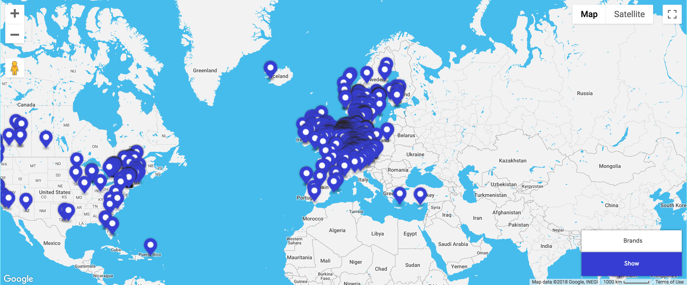

<link rel="import" href="../../bower_components/polymer/polymer-element.html">
<link rel="import" href="gofrank-map.html">

<dom-module id="gofrank-map-page">
  <template>
    <style>
      :host {
        display: block;
      }

      header {
        position: relative;
      }

      #background-img {
        position:relative;
        width:100%;
        height:120px;
        object-fit:cover;
        object-position:center center;   
      }

      @media only screen and (min-width: 1024px) {     
        #background-img {
          height:120px;          
        }
      }
 
      #background-swash {
        position:absolute;
        width:180px;
        top:35px;
        left:calc(50% - 90px);
      }

      @media only screen and (min-width: 1024px) {     
        #background-swash {
          width:220px;
          left:calc(50% - 110px);   
          top:30px;       
        }
      }     

      header h2 {
        @apply --body-font-desktop;
        font-weight: bold;
        font-size:18px;
        line-height:24px;
        text-align:center;
        margin-top:-110px;
        position:relative;
        padding:16px;
        box-sizing:border-box;
      }

      header h2 br {
        display:block;
      }

      @media only screen and (min-width: 1024px) {  
        header h2 br {
          display:none;
        }         
      }

      @media only screen and (min-width: 1024px) {     
        header h2 {
          @apply --body-font-desktop;
          margin-top:-100px;
          font-weight: bold;
        }
      } 

      #map-example {
        width:100%;
        box-shadow:0px 0px 1px 1px rgb(0,0,0,0.1);
        position: relative;
      }

    </style>

    <header>
      
            
      <h2>Find shops selling frank brands <br>in your neighborhood.</h2>
    </header>

    <body>
            

    </body>
  

  </template>

  <script>
    /**
     * @customElement
     * @polymer
     */
    class GofrankMapPage extends Polymer.Element {
      static get is() { return 'gofrank-map-page'; }
      static get properties() {
        return {
          icon: {
            type: String,
            value: ''
          }
        };
      }

    }

    window.customElements.define(GofrankMapPage.is, GofrankMapPage);
  </script>
</dom-module>
